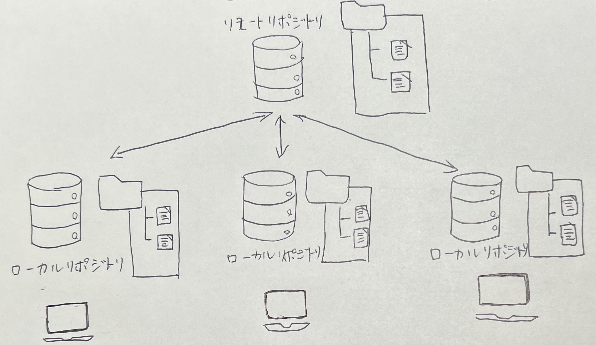

1.Gitに関して
gitとは分散型バージョン管理システムである。
通常、最新バージョンにアップデートすると古いバージョンに戻すことはできない。しかし、Gitで管理しているファイルであれば、コンピューター上でファイルの編集履歴を管理できるため、編集前のファイルを残したまま、新しく編集したファイルを保存することが可能である。
このように、gitとはファイルの古いバージョンから新しいバージョンでの管理が簡単にでき、作業を効率化できるツールである。
gitの主な特徴は以下である。
古いバージョンに簡単に戻せる
新旧のファイルを一元管理できる
編集した履歴を複数人で共有できる
複数人で修正した部分を一つに統合できる
Gitの仕様は、キーボード入力のコマンドによって操作するCUIである。
git管理は基本的に以下の構造となっている。

ファイルやディレクトリが保存されるリポジトリは、リモートリポジトリとローカルリポジトリに分かれる。
リモートリポジトリとは、特定のサーバー上に設置して複数人で共有するためのリポジトリである。
ローカルリポジトリとは、ユーザーごとに配置される手元のマシンで編集できるリポジトリである。